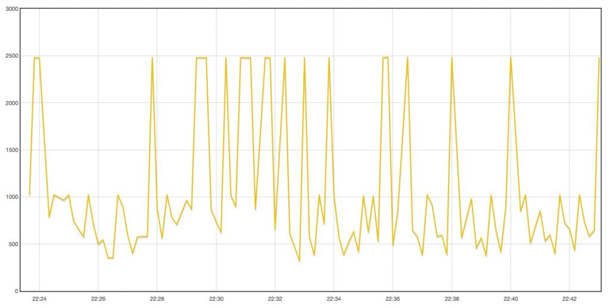

Hi,
I bought an LDR to measure electric consumption on my power meter.
My power meter has an infrared LED which outputs pulses.
I attached the LDR with the TinyTx node to the power meter. But unfortunately it does not send anything!
If i use a flashlight, my wireless sensor TinyTx (Sketch) sends a signal.
Is the LDR able to read infrared impulses? Which sensor is used to read an infrared LED?
Maybe its a problem with the resistor which is used between Pin A0 and Pin D9 on my TinyTX!? I have to check which resistor I am using. There are two different sketches for TinyTX to use with a LDR:
https://github.com/nathanchantrell/TinyTX/blob/master/TinyTX_LDR_Meter/T...
https://github.com/nathanchantrell/TinyTX/blob/master/TinyTX_LDR/TinyTX_...
I am sure I use the the first one on my TinyTX, but I am not sure that I used the correct resistor - can this be the problem?
Best regards,
Christian
Re: Using TinyTX and LDR to measure Watt on my power meter
You need some data on your LDR! You need to know its resistance in the dark (easy) and when seeing the infra-red pulses (harder). Without that, you cannot calculate the correct value for the series resistor.
You might be able to get an idea of the 'light' resistance if you use a TV remote control as a substitute for the meter. The one used in the emonGLCD responds to my TV remore control if the range is less than 2 cm.
If you cannot find the resistance of your LDR, all you can do is try different values of series resistance until you find one that works - do not go below the minimum value and destroy your LDR with too much current.
Re: Using TinyTX and LDR to measure Watt on my power meter
Hi Robert,
thank you for your answer.
I found a specification on my LDR: http://www.produktinfo.conrad.com/datenblaetter/125000-149999/145475-da-...
It says:
Resistance value at 10 lux = 27 - 94 KOhm
Minimum resistance 1 sec after removal of light = 0,5 MOhm
How can I measure its resistance when an infrared LED is on?
Of course I can use my TV remote control to send an infrared signal. But how to measure it?
Maybe I can use a voltmeter to measure its resistance when using my TV remote like written here https://learn.adafruit.com/photocells/testing-a-photocell
But how do I calculate which resistor I need for my LDR if I know its resistance?
Best regards,
Christian
Re: Using TinyTX and LDR to measure Watt on my power meter
OK, that information helps. Let me assume you are making a voltage divider circuit between the supply and ground, and your LDR is in the top position and your fixed resistor in the bottom. When the LDR is illuminated, its resistance will be low and you have a positive pulse. When it is dark, you have approx 500 kΩ, so you want the resistance of the fixed resistor to give you a logic 'LOW' at your input when dark. You know the supply voltage, you can find what a logic LOW voltage is, so you can calculate the fixed resistor's value. I guess about 100 kΩ. That will give you a LOW voltage of Vcc/6. Now let's check what this will give you at 10 lux: your LDR is (say) 100 kΩ that will give you a HIGH voltage of Vcc/2 worst case, which is probably not good enough - you need more light - but it could be as high as nearly 0.8 × Vcc - which should be OK.
Until we know how low the resistance goes when the LED is on, we can do no better, but this shows you how to begin to calculate the value. It might be better (depends on the voltages you need for a logic HIGH and a logic LOW input) to switch the positions of the LDR and resistor, then invert the input in software.
Re: Using TinyTX and LDR to measure Watt on my power meter
Hi Robert,
thank you very much for calculating this.
Yesterday evening I changed my setup a little bit. Unfortunately I had no 100 kΩ resistor at home, so I used two 47 kΩ (=94 kΩ) resistors.
The good news is that, using my infrared TV remote control the TinyTX started to send - so the LDR was able to read the signal. The bad news is that, that it was not able to read the infrared LED of my power meter. Maybe because of the weak light of the infrared led of my power meter?
The question is how to change the size of the resistor so that the LDR is working with the infrared LED of my power meter? Do you have any ideas? How do you calculate the size of the resistor?
Best regards,
Christian
Re: Using TinyTX and LDR to measure Watt on my power meter
So you are almost there.
There can be two problems. First, have you excluded all light? To get the highest dark resistance, you must excluded all light - both visible and infra-red. Second, the light resistance is inversely proportional to the amount of light, so the more light you can get from the IR LED, the better. Usually that means getting as close as possible and directly in line.
I have no idea how much light you will get out of your meter, nor of the characteristics or the actual LDR that you have, so I cannot do the calculations exactly. I have shown you how to calculate the resistor value, you need to check the data sheet for your TinyTX and find the voltages that your input considers to be logic HIGH and logic LOW, then you adjust those calculations and the resistor value so that when dark your voltage is only just below the LOW threshold and when light you hope it will go above the HIGH threshold.
If you cannot do that, you can either try amplifying the voltage, or you can get a more sensitive LDR.
Re: Using TinyTX and LDR to measure Watt on my power meter
Yes, I exluded all light. I closed the fusebox my power meter is in, so the LDR is completely in the dark.
The LDR is directly (face-to-face) put on the infrared LED of the power meter. There is only a glas in between.
TinyTX is running with two AA batteries (each 1.5V) = between 3V and 3.3V and outputs this voltage when a pin is defined as output.
So i think the logic HIGH is exactly the supply voltage - but I'm not sure.
So thank you for helping me Robert. I think I have to try around a little bit find the correct resistor. Can I destroy the LDR by trying around with different resistors? I have only a very basic knowledge, so how is the formula to calculate the resistor I need?
Christian
Re: Using TinyTX and LDR to measure Watt on my power meter
So i think the logic HIGH is exactly the supply voltage - but I'm not sure.
No. The voltage you are looking for is the voltage that the input recognises as HIGH. Check the data sheet. It is usually above about 70% of the supply voltage, and LOW is usually below about 20% of the supply voltage.
The data sheet for the ATTiny84 is here: http://www.atmel.com/Images/doc8006.pdf If you look in section 20, you will see that a LOW is below 0.2 Vcc if Vcc is between 1.8 & 2.4 V, and 0.3 Vcc if Vcc is between 2.4 and 5.5 V; and a HIGH is above 0.7 Vcc if Vcc is between 1.8 & 2.4 V, and 0.6 Vcc if Vcc is between 2.4 and 5.5 V.
You can destroy your LDR if you use a resistor that is too low, the data sheet will tell you the maximum power that it can safely dissipate. I guess it will be in the order of 100 mW, so you need a quite small resistor (well below 100 Ω) to do that with a 3.3 V supply. As it looks as if you need resistors in the 100 kΩ range, the only danger is an accidental short-circuit.
Re: Using TinyTX and LDR to measure Watt on my power meter
Hi Robert,
thanks for the specification. I have only a very basic knowledge working with microcontrollers.
I was trying around with multiple resistors now but I had no luck.
With my TV remote, everything works fine - but not with my power meter.
I have to find out if the infrared led is working or not.
And I have also read that there are infrared interfaces where you can read more information than just a light pulse. But some interfaces have a photoresistor and need an active light pulse from a sensor before they send information.
I found a specification from my power meter, I will post the link here.
Best regards,
Christian
Re: Using TinyTX and LDR to measure Watt on my power meter
Hi Christian
You should be able to check your meter using a mobile phone camera, the infra red light is visible via a digital camera.
Are you sure it's supposed to pulse? if it uses infra red it could well "communicate" rather than just "pulse" if it does communicate it could well be waiting to be "asked" for the data,
Paul
Re: Using TinyTX and LDR to measure Watt on my power meter
If you have a digital camera/webcam/camera phone, you might be able to see the IR LED using that. But if you can't, it's not conclusive as some are fitted with an IR filter. I think the most likely scenario is the LED is working, but the light pulse is not of sufficient intensity to make the ATTiny input swing far enough for a pulse to be recognised.
"I have only a very basic knowledge working with microcontrollers." That's where I'm trying to help you by steering you towards where to find the information and how to interpret it, then how to do the calculation.
[Edit] Not again! Paul and I seem to be able to post nearly the same answer at nearly the same instant!
Re: Using TinyTX and LDR to measure Watt on my power meter
Hi Paul, Hi Robert,
great thank you!
Yesterday evening I tried to capture the infrared led pulse with my digital camera and I could see the light pulse on my screen! It is a short flash every 1kW.
So I think the pulse has not the sufficient intensity to work with my LDR. Maybe I can try, using different resistors, to make the LDR more sensitive. I think with the right setup, the LDR will be able to capture the light pulse.
When you have a look on the sketch to line 134-137, I think this has something to do with the value which is read from the LDR https://github.com/nathanchantrell/TinyTX/blob/master/TinyTX_LDR_Meter/T...
There is another sketch for Attiny just for sending the light intensitiy https://github.com/nathanchantrell/TinyTX/blob/master/TinyTX_LDR/TinyTX_... It sends the LDR value every minute. So if I modify this sketch that it just sends the LDRs value if the LDR values changes, so I can add it in front of my power meter and read the exact value from the LDR when it's dark and when the light pulses. Then I can modify the LDR_Meter sketch with the exact values.
Best regards,
Christian
Re: Using TinyTX and LDR to measure Watt on my power meter
I see you're actually using an analogue input for your pulse. I could not access those external links earlier, so I did not know that and had to assume you were using a digital input (and that should have been obvious from what I wrote). You will certainly need to change to levels at which you detect the pulse if you are using the analogue input, you might also have a problem with the duration of the pulse and the speed at which you poll and can measure the analogue input, though as you can see the pulse using a camera, it is likely that it is long enough to be able to read it.
Re: Using TinyTX and LDR to measure Watt on my power meter
Hi Robert,
oh, you were talking about a digital input - now I understand your answers better :-) Sorry for that! No, it is just an analogue input. The LDR is NOT connected directly to the infrared LED of the power meter.
I modified the attiny sketch in a way that it now just reports changes on the analog input. This means, whenever the light condition (the resistance of the LDR) changes, my wireless TinyTX nodes are sending a signal.
I made the LDR very sensitive using up to 200 kOhm resistor. So it works perfect with my TV remote when holding it about 1 meter away from the LDR. But not with the power meter. It seems that the signal has not the suffiecient intensity. Maybe the LDR is still not sensitive enough?
Best regards,
Christian
Re: Using TinyTX and LDR to measure Watt on my power meter
I think you need to forget the sketches for a moment and start at the beginning. What numbers do you get for the light intensity (a) when it is dark and (b) when the meter LED is pulsing? (Recording the maximum and minimum values should give you the numbers you need). Then you can decide the number to set where it decides that there is a pulse, and the number where it decides there is not a pulse.
These lines do that:
if (!ledOn && powerReading < 1010)
{
ledOn = true;
}
else if (ledOn && powerReading > 1020)
{
ledOn = false;
}
it assumes that the LDR is connected between GND and the analogue input (because it expects the voltage to fall when it decides the LED is on, and says that the light has to go below 1010 (only about 40 mV below VCC) to register a pulse, and it must rise above 1020 (nearly at VCC) to recognise 'dark'.
Where is your LDR connected? If it is between the analogue input and VCC, then you definitely need to change that part of the sketch.
Re: Using TinyTX and LDR to measure Watt on my power meter
Hi Robert, Hi Paul,
I am still working on this project. It is not working yet :-(
Now I bought an infrared sensor like this one and connected it to my TinyTX wireless sensor node.
It works fantastic with my TV remote control over a great distance and it ignores most of the ambient light unlike the LDR sensor.
I uploaded a skech to the Attiny. So my TinyTX wireless node sends the value, every time the infrared sensor receives a new value. Using the RFM12Pi interface in emoncms I connected the TinyTX wireless sensor to a feed.
I did this in a first step to find out which is the value (a) when it is dark and (b) when the meter infrared LED is pulsing. I got the following values. Now I think everything above the value 2000 stand for (b) the pulsing LED and everything below 2000 for (a) when it is dark.

Now in the second step my idea was to adapt / create a sketch for the attiny on my tinyTX, which calculates the Watt value every time the infrared sensor is higher than 2000. So I used this sketch from Nthan Chantrell on github and created my "own" very basic sketch. The most important part is the loop part (see below).
No my question or problem is the following:
If I change the following line and add...
...the tinyTX wireless sensor perfectly sends the values to emoncms / my raspberry pi.
But if I change the line (the IF condition) to what I need, namely...
...or...
...nothing is send to my raspberry pi. Why?
In the diagramm (picture) above you can see values above 2000 going up to 2500. But the sketch does not work and the wireless node does not send anything.
What is wrong with my sketch???
void loop() {
bitClear(PRR, PRADC); ADCSRA |= bit(ADEN); // Enable the ADC
powerReading = analogRead(10); // calculate the average
ADCSRA &= ~ bit(ADEN); bitSet(PRR, PRADC); // Disable the ADC to save power
if ( powerReading > 1500 ) {
unsigned long time = millis();
unsigned long interval = time - last;
watts = 1 * 1 * 3.6E6 / interval;
last = time;
tinytx.power = watts; // Get realtime power
tinytx.supplyV = readVcc(); // Get supply voltage
tinytx.powerReading = powerReading;
rfwrite(); // Send data via RF
}
Best regards,
Christian
Re: Using TinyTX and LDR to measure Watt on my power meter
There's no way that sketch you've attached will work, it's an HTML file!
Re: Using TinyTX and LDR to measure Watt on my power meter
There's no way that sketch you've attached will work, it's an HTML file!
It looks as though it's a sketch that has been carelessly copied and pasted from a HTML page!
Paul
Re: Using TinyTX and LDR to measure Watt on my power meter
Exactly, Paul, and as such it's very hard to read. If people expect us to help them, they should not make it harder than necessary, whether by carelessness or whatever. What's wrong with checking that what you have posted is sensible and readable?
And we've got only half the story in the clip that he's pasted into the thread, we don't know where the values in the graph (screenshot) came from, so a constructive suggestion is a little difficult. But my guess is those numbers aren't the values he's reading into powerReading.
One obvious error is it will send messages all the time the LED is on - maybe that was wanted, but I doubt it, and it's not the immediate problem.
Re: Using TinyTX and LDR to measure Watt on my power meter
Hi Robert, Hi Paul,
sorry, this was just a problem with formatting / saving the original sketch. Sorry for that.
I changed the download link and uploaded a plain text document. You can check it again in my original post (url: http://openenergymonitor.org/emon/sites/default/files/LDR_Meter_Sketch_0...).
Most important is the "loop" part. I cannot find the problem!
Best regards,
Christian
Re: Using TinyTX and LDR to measure Watt on my power meter
What values are you seeing for powerReading?
Here I have a problem. The ADC in your processor is 10 bits resolution, 2^10 = 1024, so how can the output "powerReading" ever be greater than 1023?
Where did your values of 2500 come from?
Re: Using TinyTX and LDR to measure Watt on my power meter
Hi Robert,
the TinyTX wireless node is connected to a raspberry pi using RFM12Pi. On my raspberry I installed emoncms. The graph above shows the infrared sensor value (powerReading) which was send from TinyTX to emoncms.
If my TinyTX node is sending a value to emoncms, the following values (like in my sketch) appear in the "Input" menu of emoncms. In this first step I am only interested in the values for powerReading when its dark and when the LED pulses.
typedef struct {
int power; // Temperature reading
int supplyV; // Supply voltage
int powerReading; // Infrared Sensor
}
From the input of "powerReading" I created a feed in emoncms. After creating the feed I started the realtime graph. You can see the result in my post above.
I agree with you and I think the values I see in emoncms for powerReading (e.g. 2500) are not the values the TinyTX node captures in the powerReading variable.
Even if I change the IF-statement in the loop() part of my sketch to something like if ( powerReading > 1000 ), nothing is send and received to emoncms. Unlike if I write if ( powerReading > 500 ) than I receive the values shown in the graph above.
How can I get the "real" values for powerReading? Does emoncms does some kind of calculation or transformation on the values shown in the "Input" menu?
Best regards,
Christian
Re: Using TinyTX and LDR to measure Watt on my power meter
The point is, if the loop in your TinyTX is looking for a value close to or above 1023 (bearing in mind that the processor data sheet does not guarantee you will get 1023, only that the output will be close to 1023, for maximum input) then you will never trigger the transmitter.
Have you addressed the question of what happens if the LED is on for two consecutive trips around the loop? In that case, the second time, interval will be a very small number and watts will be very large. Interval needs to be greater than 55 for tinytx.powerReading to not overflow. And even if it doesn't overflow, you still get a wrong reading because it believes it has seen two flashes in quick succession.
You need to put that right first. If that isn't the problem, then you need to look at what you are doing in emoncms to find out how the number is interpreted there.
Why don't you forget the sensor and write a very simple sketch to send known fixed numbers to emoncms? When you have traced those through the system and know how it works, then you can have some confidence that you can send real data and expect meaningful results.